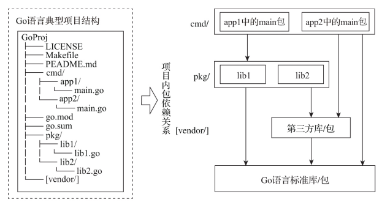
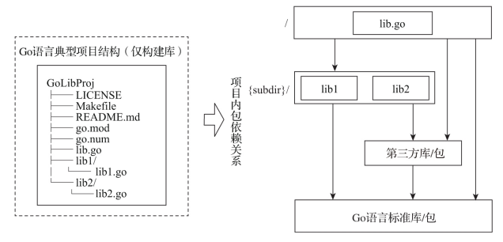

1. Go 项目的项目结构
截⾄ Go 项目 commit 1e3ffb0c （2019.5.14），Go 项目结构如下：
$ tree -LF 1 ~/go/src/github.com/golang/go
./go
├── api/
├── AUTHORS
├── CONTRIBUTING.md
├── CONTRIBUTORS
├── doc/
├── favicon.ico
├── lib/
├── LICENSE
├── misc/
├── PATENTS
├── README.md
├── robots.txt
├── src/
└── test
2. Go 语言典型项目结构
2.1. Go 项目结构的最小标准布局
作为 Go 语言项目的技术负责人，Russ Cox 在一个开源项目的 issue 中给出了他关于 Go 项目结构的最小标准布局的想法。他认为 Go 项目的 最小标准布局 应该是这样的：
// 在Go项⽬仓库根路径下
- go.mod
- LICENSE
- xx.go
- yy.go
...
// 或者
- go.mod
- LICENSE
- package1
- package1.go
- package2
- package2.go
...
2.2. 以构建二进制可执行文件为目的的 Go 项目结构

2.3. 以只构建库为目的的 Go 项目结构

2.4. 关于 internal 目录
对于不想暴露给外部引用，仅限项目内部使用的包，在项目结构上可以通过internal包机制来实现：
$tree -F ./chapter2/sources/GoLibProj
GoLibProj
├── LICENSE
├── Makefile
├── README.md
├── go.mod
├── internal/
│ ├── ilib1/
│ └── ilib2/
├── lib.go
├── lib1/
│ └── lib1.go
└── lib2/
└── lib2.go
根据 Go internal 机制的作⽤原理，internal ⽬录下的 ilib1、 ilib2 可以被以 GoLibProj ⽬录为根⽬录的其他⽬录下的代码（⽐如 lib.go、lib1/lib1.go 等）所导⼊和使⽤，但是却不可以为 GoLibProj ⽬录 以外的代码所使⽤，从⽽实现选择性地暴露 API 包。